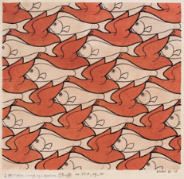
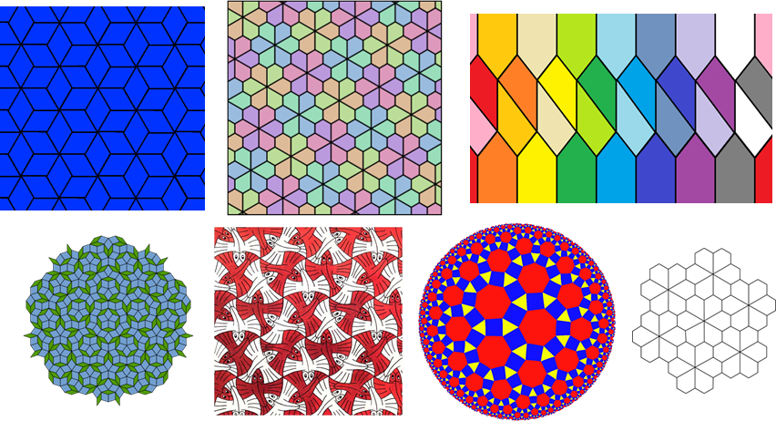
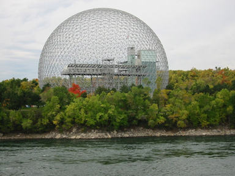
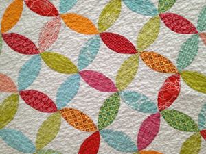
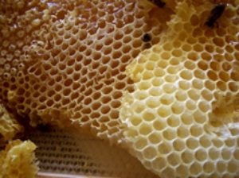
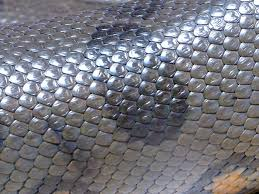
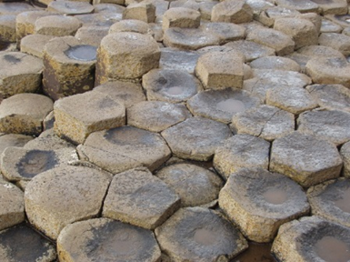
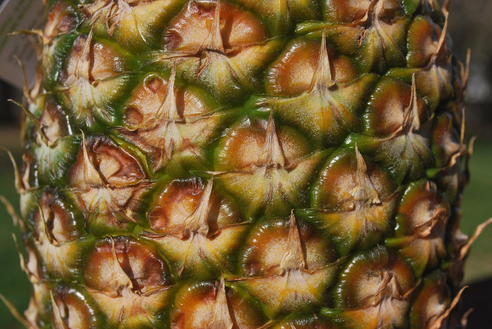
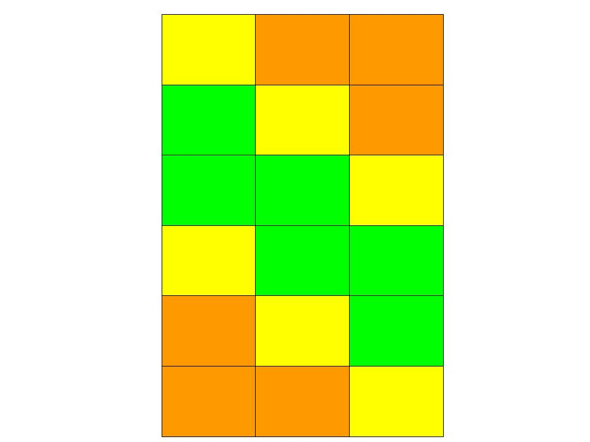
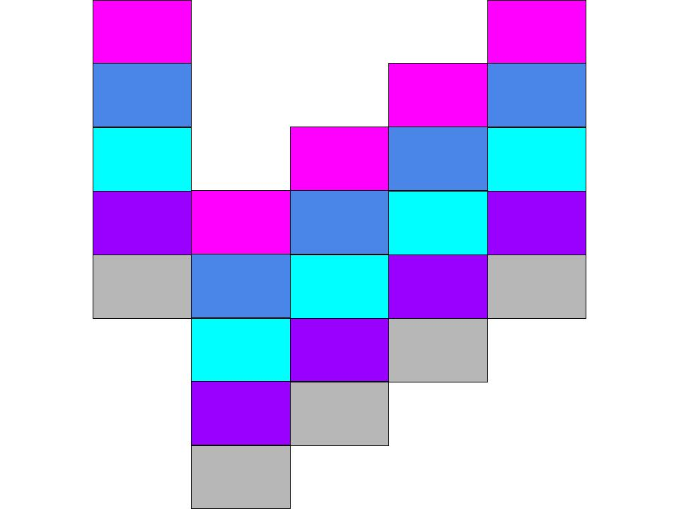

What You Should Know - Choose Your Technology: Tessellations and Mathematical Challenges
 Important Vocabulary
Important Vocabulary
- Polygon - a closed two-dimensional shape that is composed of straight sides
- Regular Polygon - a polygon in which all sides and angles have equal measurements
- Tessellation - an arrangement of shapes in a repeated pattern without overlapping
- Repeating Pattern - a pattern that repeats using a specific rule
- Numerator - the top number of a fraction that shows how many parts of the whole the fraction is
- Denominator - the bottom number of a fraction that shows the number of equal parts an item is divided into
Patterns All Around
We see patterns all around us. In nature, in buildings, and in art. Patterns repeat something over and over, like the same color or the same shape.

What is a Tessellation?
A tessellation is a special kind of pattern. Tessellations are flat surfaces with one or more shapes that repeat without any gaps.
Tessellations can be simple, like a checkerboard, or very complex. All of these patterns are tessellations. Can you find the repeating shapes in each pattern?

Tessellations in the World Around You
Tessellations are found in the world around you: the design on your favorite blanket, the tiles on the ceiling of a museum, the honeycomb hanging from the beehive, and so many more visual models display tessellations in the real world. Some of the patterns we see were created unintentionally while others required a great deal of mathematics to create works of art.
 
Tessellations in Nature
Tessellation patterns are not necessarily man-made. In fact, tessellations can be found all around us in nature.
|  |  |  |  |
Fractions as Division
Tessellations can be used to solve math problems. They can serve as a visual model to interpret an expression involving fractions. You can think of fractions as the division of the numerator by the denominator. For example, if you want to split 18 tiles into 3 columns, the number of tiles in each column can be represented as 18/3, which is the same as 18 ÷ 3. This is shown in the diagram below. How could you use this diagram to figure out 18/3?

Multiplying Whole Numbers by Fractions
To multiply a fraction a/b by a whole number q, multiply the whole number by the numerator of the fraction:
a/b × q = a×q/b
For example, to find 3/8 × 2, you would multiply the whole number 2 with the numerator 3 to get 3×2/8 or 6/8.
If you want to increase an amount by a fraction of the original amount, first multiply the fraction by the original amount, then add to the original amount.
For example, if you have 20 tiles and want to increase the number of tiles by 1/4, first multiply 1/4 × 20, then add the product to 20.
- Multiply the whole number by the numerator: 1×20/4 = 20/4 = 5
- Then add to the original amount: 20+5=25
The new amount will be 25 tiles.
How could this diagram help you solve the example math problem?

Career Connection and Real-World Application
Architects
Architects often use tessellations in their designs. Some examples include floor tiles, structural supports, and exterior wall patterns. Architects use a variety of software programs when they plan tessellations in order to ensure a proper fit and to visualize what the final product will look like.

Textile Designer
Textile designers design fabric such as clothing and upholstery, as well as other building and decorating materials like tiles, wallpaper, blinds, etc. Textile designers apply tessellations to their products to create appealing patterns.